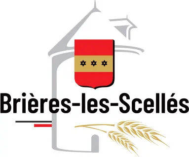

Désembouage à Brières-les-Scellés (91150)

Retrouver un chauffage performant et économe en énergie
Avec le temps, les circuits de chauffage s’encrassent naturellement à cause de l’accumulation de boues, de calcaire et d’impuretés. Ces dépôts freinent la circulation de l’eau, réduisent la diffusion de la chaleur et augmentent la consommation énergétique. À Brières-les-Scellés, notre entreprise met son expertise à votre service pour réaliser un désembouage complet et redonner à votre installation de chauffage toute sa performance d’origine.
Pourquoi effectuer un désembouage ?
Le désembouage est une étape essentielle dans l’entretien d’un système de chauffage. Les boues et résidus proviennent de la corrosion des métaux et de la présence de calcaire dans l’eau. Au fil des années, ces dépôts s’accumulent dans les radiateurs, les planchers chauffants et les tuyauteries, provoquant une perte d’efficacité.
Voici les signes révélateurs :
- Des radiateurs tièdes ou froids sur certaines zones ;
- Des bruits inhabituels dans les canalisations ;
- Une chaudière qui consomme davantage sans améliorer la chaleur ;
- Des pièces qui se réchauffent difficilement ;
- Un système qui semble moins réactif.
Le désembouage permet de nettoyer intégralement le circuit pour rétablir une circulation fluide de l’eau chaude.
Ses avantages sont multiples :
- Une meilleure diffusion de la chaleur dans tout le logement ;
- Une baisse de la consommation énergétique jusqu’à 20 % ;
- Une prévention des pannes et des blocages ;
- Une durée de vie prolongée pour la chaudière et les radiateurs.
Il est recommandé d’effectuer un désembouage tous les 5 à 7 ans, selon l’état du réseau.
Une entreprise locale à votre service à Brières-les-Scellés
Depuis plus de dix ans, SPC Santos Plomberie Chauffage intervient dans tout le département de l’Essonne pour l’entretien et la maintenance des systèmes de chauffage. Basée à proximité, notre équipe se déplace rapidement à Brières-les-Scellés ainsi que dans les communes voisines comme Étampes, Ormoy-la-Rivière, Boissy-le-Sec ou Morigny-Champigny.
Notre objectif : assurer un chauffage performant, durable et économique, quelle que soit la configuration de votre installation.
Nos atouts :
- Une expertise reconnue dans le domaine du chauffage et de la plomberie ;
- Des techniciens qualifiés et formés aux dernières techniques ;
- Des produits respectueux de l’environnement ;
- Des interventions rapides et soignées, planifiées selon vos disponibilités.
Nos prestations de désembouage à Brières-les-Scellés
Nous intervenons sur tous types de circuits de chauffage hydrauliques :
- Radiateurs à eau chaude (acier, fonte, aluminium) ;
- Planchers chauffants hydrauliques ;
- Chaudières gaz, fioul ou à condensation ;
- Pompes à chaleur air/eau et systèmes hybrides.
1. Diagnostic complet du réseau
Avant toute intervention, nos techniciens effectuent un diagnostic détaillé de votre installation : mesure de la pression, du débit, de la température et analyse de la qualité de l’eau. Ce bilan nous permet de choisir la méthode la plus efficace pour votre système.
2. Nettoyage complet du circuit
Nous appliquons l’une des deux méthodes suivantes selon l’état du réseau :
- Le désembouage mécanique, à l’aide d’une machine à pression contrôlée pour expulser les boues et impuretés ;
- Le désembouage chimique doux, utilisant un produit non corrosif qui dissout les dépôts sans endommager les canalisations.
3. Traitement préventif
À la fin du nettoyage, nous injectons un inhibiteur de corrosion afin de prévenir la reformation de boues et d’assurer une protection durable de votre installation.
4. Vérification et mise en service
Une fois le nettoyage terminé, nous testons la circulation de l’eau et la montée en température pour garantir un fonctionnement optimal.
Pour qui intervenons-nous à Brières-les-Scellés ?
Nos services s’adressent à tous types de clients :
- Les particuliers, pour leurs maisons ou appartements ;
- Les syndics et copropriétés, pour l’entretien des chaufferies collectives ;
- Les entreprises, pour leurs bureaux ou ateliers ;
- Les collectivités locales, pour les bâtiments publics et écoles.
Chaque intervention est personnalisée selon la configuration du réseau et les besoins spécifiques de votre installation.
Des tarifs transparents et compétitifs
Chez SPC Désembouage Brières-les-Scellés, la transparence est une valeur essentielle. Avant toute prestation, nous établissons un devis gratuit et détaillé, précisant la méthode utilisée, les produits employés et le coût total de l’intervention.
Nos tarifs sont conçus pour offrir le meilleur rapport qualité-prix, sans frais cachés. Le désembouage est un investissement rentable, puisqu’il permet d’économiser de l’énergie tout en prolongeant la durée de vie de votre système de chauffage.
SPC Santos Plomberie Chauffage : une expertise reconnue
Créée en 2010, SPC Santos Plomberie Chauffage est aujourd’hui une référence dans le domaine du chauffage et de la plomberie en Essonne. Nous intervenons également dans les départements voisins (Seine-et-Marne, Val-de-Marne et Hauts-de-Seine) pour toutes les opérations d’entretien thermique.
Nos techniciens utilisent du matériel moderne et conforme aux normes européennes, garantissant un nettoyage complet, sûr et durable. Notre philosophie : allier technologie, rigueur et proximité pour offrir à chaque client un service de haute qualité.
Nos engagements qualité
Choisir SPC Désembouage Brières-les-Scellés, c’est bénéficier de :
- Un diagnostic gratuit et personnalisé avant intervention ;
- Des produits écologiques respectueux de vos installations ;
- Une intervention rapide et soignée ;
- Une garantie de satisfaction sur toutes nos prestations.
Nous faisons de votre confort et de la performance de votre chauffage notre priorité.
Contactez-nous dès aujourd’hui
Votre chauffage chauffe mal ? Vos radiateurs présentent des zones froides ou font du bruit ? Contactez dès maintenant SPC Désembouage Brières-les-Scellés pour un devis gratuit et une intervention rapide.
📞 Téléphone : 01 69 25 77 54
📍 Adresse : 19 rue Pierre Brossolette, 91700 Sainte Geneviève des Bois
📧 Email : contact@desembouage-91.fr
SPC Désembouage Brières-les-Scellés, votre partenaire local pour un chauffage plus propre, plus performant et plus économique.
Contactez-nous au 01 69 25 77 54